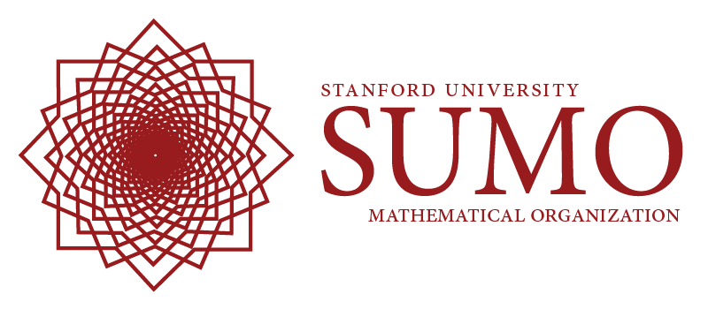

What is SUMO? fl fi
SUMO is the Stanford University Math Organization. We are the by-students-for-students math club on campus. We host various events that are open to everyone: math majors and non-math majors, graduate and undergraduate.
What events does SUMO run?
Colloquium / Speaker Series
4:15 to 5:05 PM each Thursday in 380-380C
This is a weekly talk given by a professor, grad student, or visitor about undergraduate-accessible topics in pure and applied mathematics that go beyond the standard curriculum. You can get 1 unit of credit for your attendance by signing up for MATH 196; of course, you’re also welcome to just show up. Food is provided afterwards.
Symposium
5:00 to 6:00 PM each Tuesday in 380-383N
This is a weekly informal talk or discussion led by an undergraduate or graduate student about any math-related topic of their choosing. You are welcome not only to attend, but also to sign up to give a talk yourself!
Stanford Math Tournament
This is a competition we write and run every February for hundreds of local high-school students as well as a number of teams from across the country and even across the world. For many high-school students, this is an important opportunity to solve some very fun problems and meet other math enthusiasts. We encourage you to help out; you can get involved as early as fall quarter!
American Regions Math League
Each year, the Bay Area sends several extremely strong teams to ARML, a prestigious, national math contest for high schoolers. SUMO members coach these teams and accompany them to the competition each spring.
Math Mingle
4:00 to 6:00 PM each Friday in 380-381U
This is a fun weekly social event where students interested in math can socialize over interesting mathematical ideas and free food in a laid-back atmosphere. Problems and puzzles will be provided but you are welcome to bring in your own mental challenges!
Tutoring
6:00 to 10:00 PM each Monday and Wednesday in 380-381T
We run twice-weekly tutoring sessions for students in the MATH 51/52/53 course series.
Other Events
We’re planning on running a few special events throughout the year:
Puzzle Hunt
10:00 AM to 6:00 PM on Saturday, April 20th
Last year we hosted a puzzle hunt in the style of the MIT Mystery Hunt.
Movie Night
We will be hosting a Movie Night a few times each quarter. Dinner will be provided.
Other information
We’ve also created a page about various mathematical opportunities, including a lot of summer programs.
Feel free to contact one of us to see what we’re up to or to suggest new activites!